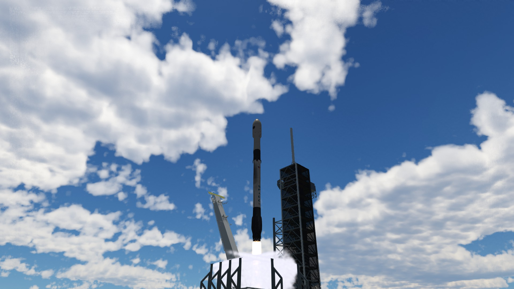
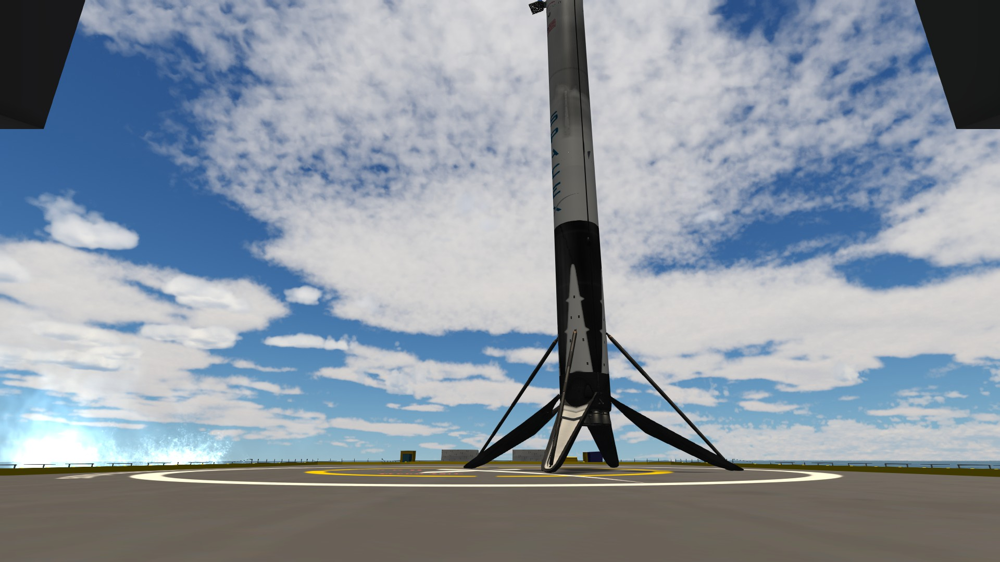
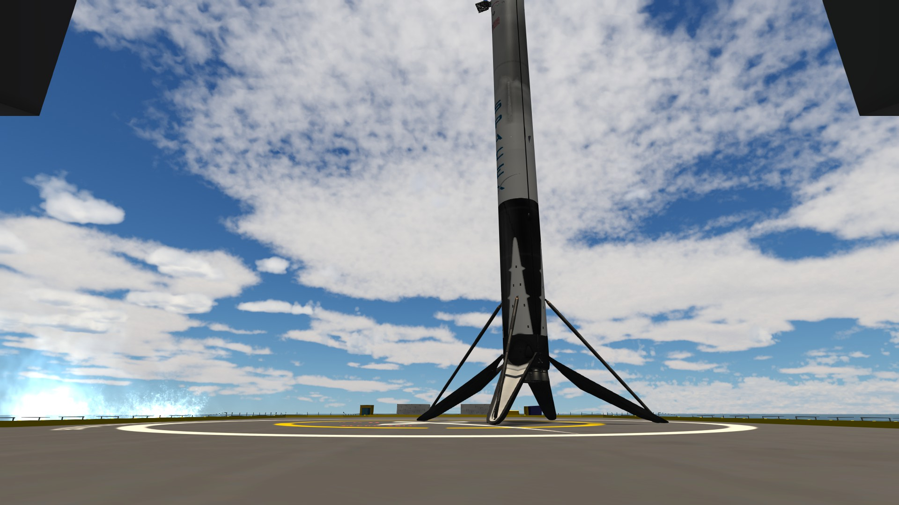
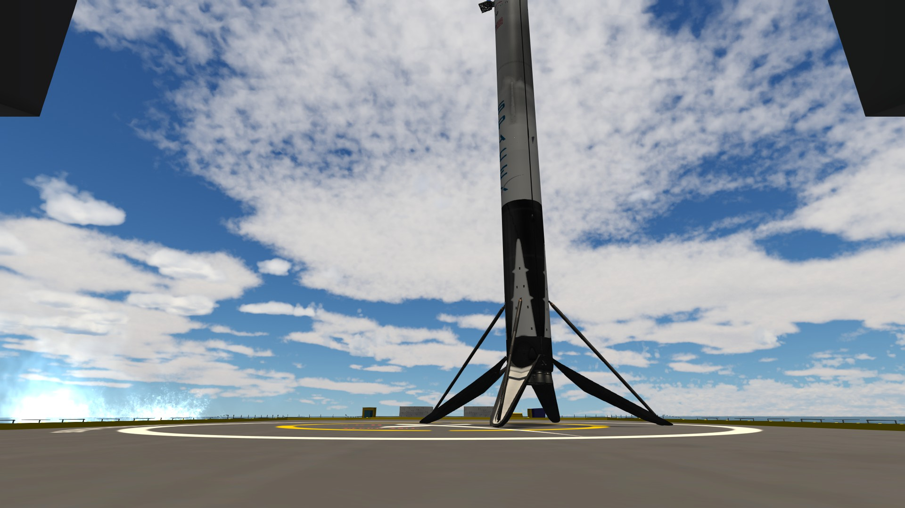

NROL-12
Vehículo: Falcon 9 Block 5
Fecha: 07 de febrero de 2025
Estado: Éxito

Introducción
Halcon Space lanzó con éxito la misión NROL-12, transportando una carga clasificada a una órbita secreta. La primera etapa B1068 aterrizó con éxito en JRTI, marcando el primer aterrizaje marítimo de la compañía y un paso clave en la reutilización de cohetes.
Detalles Técnicos
- Vehículo: Falcon 9 Block 5
- Altura del cohete: 70 m
- Propulsor: B1068.2
- Carga útil: Carga clasificada
- Órbita: Clasificado
- Recuperación: Éxito sobre JRTI "Just Read The Instructions".
Imágenes de la misión



 

